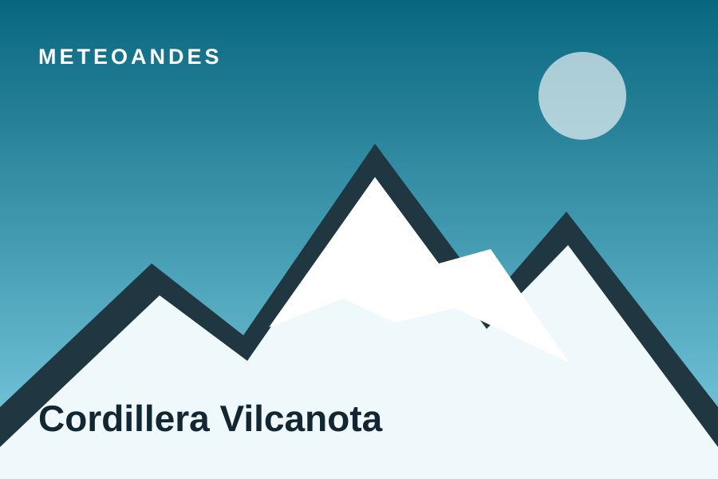
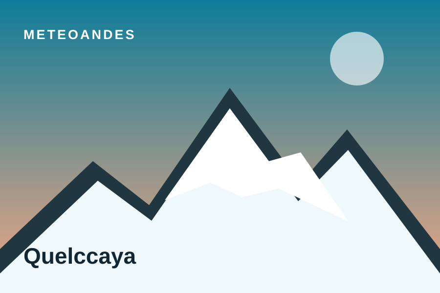
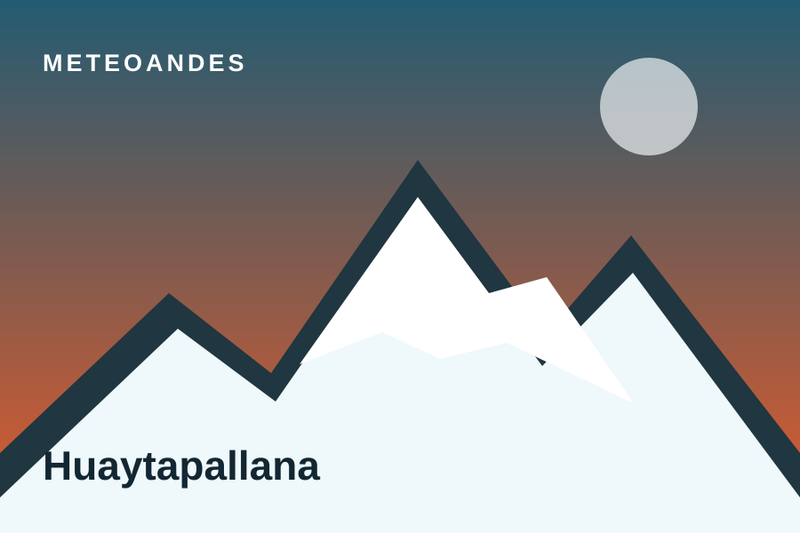
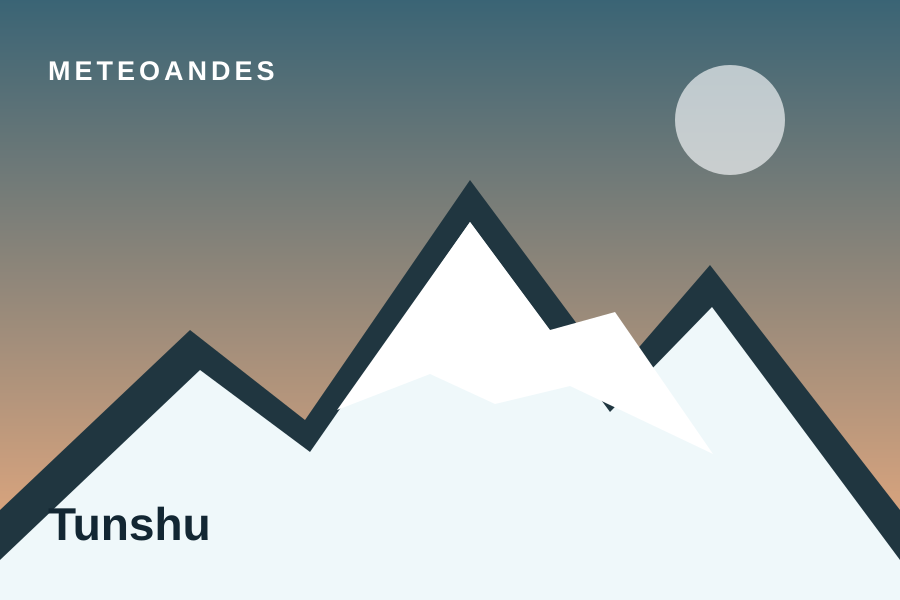
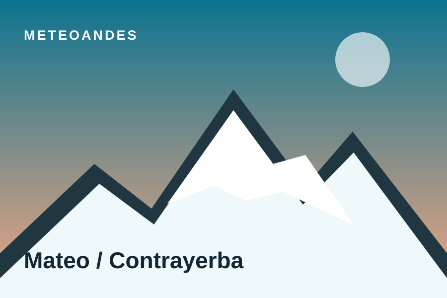
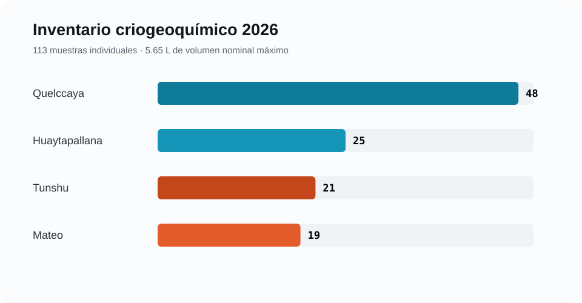
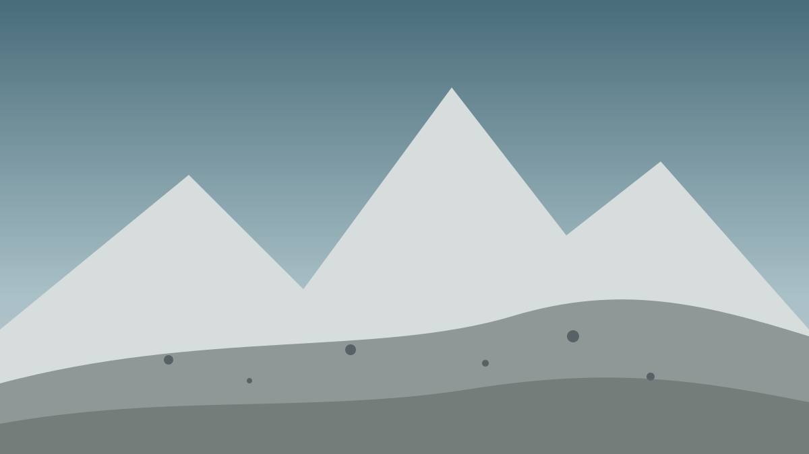

MeteoAndes
<div class="ma-eyebrow" style="color:#9ce1ef">Programa científico · Perú · 2018–2026</div>
<h1>Medimos el hielo que queda.</h1>
<p class="ma-hero__lead">Altimetría satelital, radar, estaciones meteorológicas y muestreo de carbono negro para observar cómo cambian los glaciares tropicales del Perú —y separar lo demostrado de lo que aún está en evaluación.</p>
<div class="ma-hero__actions">
<a class="ma-btn ma-btn--primary" href="investigacion/cambio-elevacion.html">Ver el resultado principal →</a>
<a class="ma-btn ma-btn--ghost" href="datos/index.html">Explorar datos</a>
</div><div class="ma-kpi"><span class="ma-kpi__value" data-count-to="113">113</span><span class="ma-kpi__label">muestras de nieve y hielo inventariadas en 2026</span></div>
<div class="ma-kpi"><span class="ma-kpi__value" data-count-to="68">68</span><span class="ma-kpi__label">adquisiciones Sentinel‑1 auditadas en Vilcanota</span></div>
<div class="ma-kpi"><span class="ma-kpi__value" data-count-to="129">129</span><span class="ma-kpi__label">pasadas ICESat‑2 en la serie regional revisada</span></div>
<div class="ma-kpi"><span class="ma-kpi__value" data-count-to="-1.463" data-decimals="3">−1.463</span><span class="ma-kpi__label">m año⁻¹ · descenso regional ponderado por hipsometría</span></div>Un descenso regional robusto en Vilcanota
La serie ICESat‑2 ATL06‑SR de diciembre de 2018 a febrero de 2026 converge en una pérdida superficial cercana a 1.5 m por año. La estimación ponderada por área hipsométrica es −1.463 m año⁻¹ (IC95%: −2.357 a −0.596) y representa 96.5% del área analizada. La señal es más negativa en cotas bajas y medias-bajas, aproximadamente entre 5 000 y 5 400 m.

Una cadena multifuente, no una sola imagen
Cada instrumento observa una parte distinta del sistema. MeteoAndes conserva esas diferencias físicas para evitar equivalencias incorrectas entre desplazamiento radar, cambio de elevación, concentración atmosférica y deposición.
Exposición y transporte de aerosoles.
Temperatura, precipitación, nubosidad y viento.
rBC y composición química en nieve/hielo.
Absorción radiativa y fusión potencial.
Cambio de elevación y movimiento coherente.
Lo consolidado, lo preliminar y lo pendiente
MeteoAndes muestra el nivel de madurez de cada afirmación. Una arquitectura completa no equivale automáticamente a una conclusión causal.
Descenso regional multianual, estimadores robustos y diagnóstico hipsométrico.
Geometría bien condicionada; señal mensual cercana al piso de ruido; acumulado final pendiente.
Variabilidad AL30 y perfiles SP2/iones; falta cerrar QA/QC y sincronización temporal.
Sentinel‑5P y catálogo de eventos aún no producen evidencia causal final.
Cinco unidades de estudio, tres cordilleras
La red combina el campo de hielo regional de Vilcanota y cuatro sitios de campaña criogeoquímica. Las tarjetas distinguen resultados regionales de mediciones de sesión.

Campo de hielo regional
Resultado ICESat‑2 consolidado e InSAR diagnóstico.

Quelccaya
Meteorología, AL30 y 48 muestras de nieve/hielo.

Huaytapallana / Cochas
AL30 de campaña, AE33 2022–2024 y 25 muestras.

Tunshu
Campaña AL30 y 21 muestras para SP2, iones e isótopos.

Mateo / Contrayerba
Gradiente altitudinal AL30 y perfil de 19 muestras entre 0–95 cm.

Catálogo de datos
Tablas ligeras, estado de evidencia y metadatos de reutilización.
Del hielo brillante a una superficie más absorbente
El comparador ilustra el mecanismo físico —no una observación cuantitativa de una campaña específica—: una reducción del albedo aumenta la radiación de onda corta neta absorbida. Bajo 600 W m⁻², una reducción instantánea de 0.05 implicaría aproximadamente 30 W m⁻² adicionales de absorción, antes de considerar nubosidad, temperatura superficial y flujos turbulentos.

superficie limpiasuperficie oscurecidaLa afirmación causal todavía no está cerrada
El descenso glaciar observado no puede atribuirse todavía a incendios forestales específicos. Faltan una serie Sentinel‑5P validada, un catálogo de eventos, ventanas antes–durante–después, trayectorias, controles meteorológicos y sincronización con eBC/rBC, albedo y respuesta geométrica.